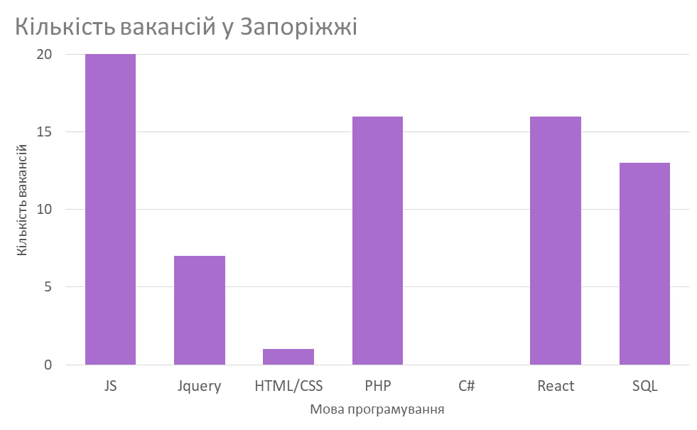

Веб-розробник
Веб-розробник — спеціаліст, який створює нові та підтримує вже існуючі сайти. Найчастіше веб-розробник працює у команді з дизайнером, тестувальником та менеджером. Також він може працювати як над зовнішнім виглядом сайту, так і його внутрішньою, серверною частиною. Тестування — хоч і не основне, але теж одне із завдань веб-програмування.
Інтернет-банки, соціальні мережі та маркетплейси - це теж сайти, тільки з більш складною структурою та функціональністю. Через це їх називають веб-додатками, але розробляє і підтримує ці сервіси той самий веб-розробник.

Історія спеціальності
Історія професії веб-розробника не така вже й стара і бере свій початок у 90-ч роках минулого століття. Тоді інтернет не був таким поширеним - був потрібен нрафічний інтерфес. 1990 року мови гіпертекстової розмітки - HTML.
Перші сайти не користувалися популярністю, тому веб-розробники не був затребуваний. Однак інтернет, з часом, став з'являтися в кожному домі. Саме в той момент веб-розробники стали бути затребуваними. та технології створення сайтів.
Зараз веб-розробник це одна з найбільш затребуваних професій у світі. Це пов'язано з декількома причинами. По-перше, сьогодні кожен другий має доступ в інтернет і тому дуже важливо задовольнити кожного. По-третє, досвідчених веб-розробників дуже мало і тому в основному вони знаходяться у великих корпораціях.
Направления в веб-разработке
В області веб-розробки існує три напрямки:- Backend-розробник — фахівець, який працює з внутрішніми частинами сайту : пише код на різних мовах, відповідає за безперебійну роботу сайту, організацію технічних процесів і базу даних.Розробник по бек-энду використовує наступний інструментарій: різні мови програмування (PHP, Perl, Java, Python, Ruby), фреймворки (Kohana, Codeigniter, Yii), а також MySQL для збереження даних.
- Frontend-розробник — фахівець, який працює над візуальною стороною сайту. Він переводить дизайн-проект в код, щоб зовнішня сторона сайту коректно функціонувала і скрізь відображалися правильно картинки. Його основні інструменти - CSS, HTML, JavaScript. Цей перелік доповнюється ще цілим переліком програм, призначених для поліпшення роботи сайту : Bootstrap, jQuery, AngularJS, LESS, Sass/SCSS та ін.
- Fullstack-розробник — професіонал, який уміє виконувати завдання backend і frontend- розробника. Таких майстрів досить мало, тому що дуже важко освоїти увесь спектр знань.
Навички та Вміння frontend-розробника
- soft skills
- Креативність
- Вміння переконувати
- Вміння працювати в команді
- Адаптивність
- Тайм-менеджмент
- hard skills
- Вміння писати зрозумілий код
- Математичні знання
- Вміння шукати інформацію у пошукових системах
- Впевнені знання стандартних бібліотек, необхідних фреймворків та інструментів
- Знання кількох мов програмування
Популярні мови та технології для Frontend-розробки
На сьогодні існує безліч мов програмування та їх похідних, однак є мови, які більш затребувані за інші.
- HTML - абревіатура мови гіпертекстової розмітки – це мова програмування для створення електронних документів, званих сторінками, що розміщуються в Інтернеті. Кожна сторінка має кілька підключень до гіперпосилань або посилань на інші сторінки.
- CSS - це мова програмування, яка використовується для опису того, як документи мають виглядати з погляду макету та стилю. Під документом зазвичай розуміється структура текстового файлу, що використовує мову розмітки, такий як поширений HTML та інші, наприклад XML або SVG.
- React - це мова програмування, розроблена Facebook для створення швидких і передових користувальницьких веб-інтерфейсів. В даний час це одна з найбільш широко використовуваних бібліотек JavaScript для створення веб-інтерфейсів. Мова програмування React підходить для створення візуальних інтерфейсів і візуалізації даних для браузерів.
- JavaScript - це популярна мова програмування, що дозволяє користувачам реалізовувати складні функції на веб-сторінках. Він може бути задіяний у будь-який момент, коли сторінка виконує динамічну дію, наприклад, показує періодичне оновлення контенту, анімовану двовимірну та тривимірну графіку, інтерактивні карти, відеовставки та багато іншого.
- PHP - це універсальна мова програмування, яка проста у використанні. Він добре працює з великою кількістю баз даних та операційних систем. Сучасні фреймворки, масивна база коду та активне співтовариство PHP- всі ці фактори забезпечують безперервну еволюцію PHP.
Плюси та мінуси професії

-
Переваги
- 1. Незамінні профі
- 2. Високий рівень життя
- 3. Плацдарм для розвитку
- 4. Професія майбутнього
- 5. Можливість стати спеціалістом у молодому віці
-
Недоліки
- 1. Сидяча робота
- 2. Постійне навчання
Скільки отримують веб-розробники?
Indeed, Payscale, Indeed, Payscale, Glassdoor наводять кардинально різні цифри середньої середньої заробітної плати розробників різних спеціалізацій і рівнів зайнятості на ринку США. Сума коливається від $44 до $75 тисяч (в Україні від 15 грн до 50 грн). Дані Statista вказують на пряму залежність рівня оплати праці та розташування.
Рівні фахівців:- Junior - програміст-початківець, який знає базові речі і розуміє принципи роботи свого інструменту. Навіть якщо ви тільки недавно почали вивчати програмування, то вже можете претендувати на звання джуна – у гіршому випадку це буде вакансія стажера, що непогано для початку.
- Middle - це розробник розуміє свою зону відповідальності та здатний самостійно приймати рішення щодо реалізації в рамках своєї компетенції. Йому не потрібно розжовувати завдання, наводити докладну декомпозицію. І він розуміє робочі процеси усередині компанії.
- Senior - це цвях програми, здатний взяти на себе проект і навіть керувати окремим підрозділом. Senior Developer має великий багаж знань, здатний стати ментором для Trainee або Junior розробника, а також покращувати ефективність команди за рахунок реалізації своїх ідей.
Перспективи професії

-
Штучний інтелект
За "розумними" технологіями майбутнє всього світу. Це відображається у будь-якій сфері вже кілька десятків років. Щойно фізична сила почала замінюватися роботами, найбільші уми розпочали роботу над повною автоматизацією наших життів. Крім того, в будь-якій веб-розробці важлива саме графічна складова. Свіжі тренди та креативні ідеї дивіться у наступному короткому відео. -
Активний перехід бізнесу в онлайн
Сьогодні багато бізнесів для розширення освоюють віртуальне середовище, проте досвідчених спеціалістів дуже мало.